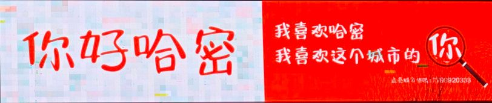
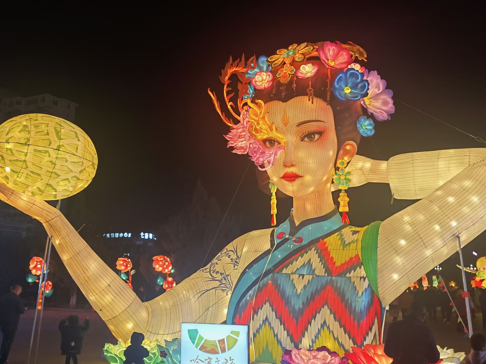
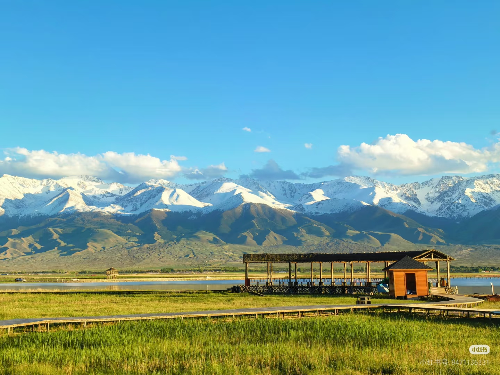
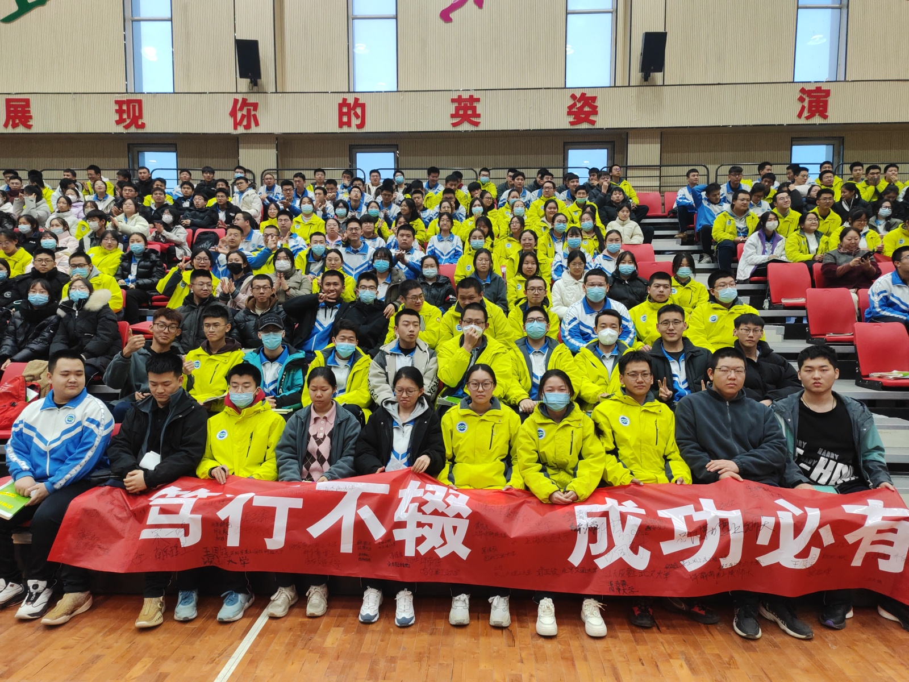

东天山：一日游四季
东天山景区集雪山、草原、森林、大漠于一体，由鸣沙山、白石头、松树塘、天山庙等核心景点组成。这里气候多变，形成了“一日游四季，十里不同天”的独特景观，是避暑和滑雪的胜地。巍峨的雪峰与翠绿的云杉交相辉映，展现了大自然最纯粹的壮美。

哈密是新疆维吾尔自治区下辖地级市，地处新疆最东端，是古丝绸之路的咽喉重镇，素有“新疆门户”“西域咽喉”之称 。这里地跨东天山南北，地貌丰富多元，兼具南北疆气候特色，也被誉为“新疆缩影” 。
作为多民族聚居地，汉、维吾尔、哈萨克等39个民族在此繁衍生息，丝路文化、草原文化、民俗文化深度交融，哈密木卡姆、维吾尔刺绣等非遗文化绽放光彩 。
这里是哈密瓜的故乡，日照充足、昼夜温差大，孕育出香甜多汁的特色瓜果；自然景观雄奇壮阔，巴里坤草原、伊吾胡杨林、大海道雅丹等风光独具魅力，人文底蕴与自然美景相得益彰。
如今的哈密，是丝路经济带重要节点城市，也是一座兼具历史厚重感与现代活力的甜美之城。

东天山景区集雪山、草原、森林、大漠于一体，由鸣沙山、白石头、松树塘、天山庙等核心景点组成。这里气候多变，形成了“一日游四季，十里不同天”的独特景观，是避暑和滑雪的胜地。巍峨的雪峰与翠绿的云杉交相辉映，展现了大自然最纯粹的壮美。

天山脚下的绿色净土——巴里坤大草原是新疆天山山系三大草原之一，这里水草丰美，牛羊成群，是体验哈萨克族游牧生活的理想之地。变幻多姿的“草原明珠”作为新疆三大咸水湖之一，湖水随季节变化呈现不同色彩，与远处的雪山、近处的草原共同构成绝美的自然画卷。

哈密翼龙-雅丹大海道景区拥有世界上规模最大、地质形态最成熟的雅丹地貌群落之一，极具视觉冲击力。这里不仅是地质奇观，更是科考宝库——作为世界上已知规模最大、化石最富集的翼龙化石遗迹地，它对于古生物研究具有极高的科学价值。置身其中，仿佛穿越到了亿万年前。
我的高中哈密市第二中学始建于1945年，1994年起专注高中办学，是哈密市直属的自治区示范性高级中学，也是多所国内顶尖高校的优质生源基地，是哈密基础教育的标杆学校。
这里承载了许多我美好而珍贵的回忆。这里有严谨的学风、温暖的师生情，是我成长的起点，也是心底永远牵挂的地方。时光流转，依旧怀念在二中的岁岁年年，感恩这段青春岁月。

